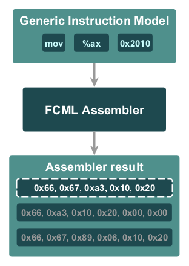
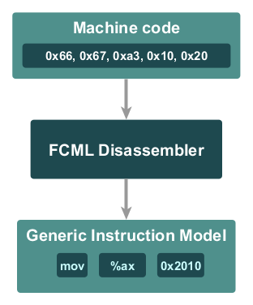
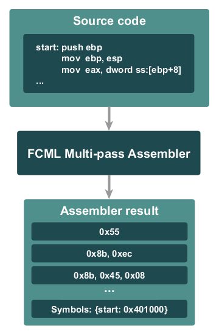
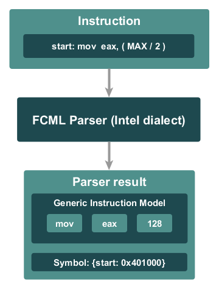
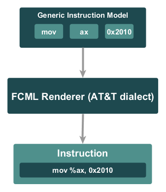

The following chapters provide more information about the project.
Features list
The following list describes the features in more detail:
One-line assembler
The FCML assembler is a one-line load-and-go assembler implementation which is able to assemble instructions encoded in generic instruction model structures. The generic instruction model is a container used to describe instructions in a more user-friendly way (at least assuming that flexibility is our goal). That is, instead of providing a textual representation of an instruction, you can build it in a more dynamic way. Then every instruction can be assembled to one or more pieces of machine code. It means that if there is an instruction which can be assembled to three forms, you will get all of them and only one will be marked as the preferred one. The API provided by the assembler is pure generic, therefore there are no dedicated functions for the supported instructions. Hence you can assemble everything using only one function and the generic instruction model describing an instruction.

Assembling process
One-line disassembler
The FCML disassembler also works with the generic instruction models. It gets a piece of machine code as a parameter and disassembles it to the generic instruction model describing an identified instruction. In addition it returns some additional information like prefixes fields, ModRM and SIB, instruction categories and more. Notice that assembling and disassembling are inverses in terms that they both use instructions encoded as the generic instruction model structures, so using the assembler you can recover a piece of machine code that was used to disassemble an instruction. It is very useful feature, because it allows us to modify an existing machine code easily.

Disassemblig process
An experimental multi-pass load-and-go assembler (Multi line!)
The FCML multi-pass load-and-go assembler assembles multiple lines of source code into the corresponding machine code. It optimizes the code in order to make it the smallest and fastest possible. It uses the classic FCML one-line assembler and FCML parser internally. At the moment it is an experimental implementation which needs more testing, so be warned.

Multi-pass disassemblig process
Support for the Intel and AT&T syntax
Currently there are two instruction syntaxes supported. The AT&T syntax based on the current implementation of the GNU Assembler (reproduces all inconsistencies that can be found there) and the Intel syntax which should be highly compatible with FASM and MASM assemblers.
Instruction parser
The FCML parser is responsible for converting an instruction written using a certain syntax to its generic instruction model based counterpart. It supports symbols and mathematical expressions.

Parsing process
Instruction renderer
The idea behind a renderer is very simple. It gets a result of the assembling process and converts the instruction from the result into its textual representation. FCML renderer supports the Intel and AT&T syntax.

Rendering process
Instructions represented as generic models
All FCML operations are based on a generic instruction model structure. The generic instruction model is a container which describes the assembler instruction as a set of independent pieces like: a mnemonic, prefixes, operands etc. Such a solution has the following advantages:
You are able to build instructions in a dynamic manner and it is more convenient than a simple string concatenation.
You are able to disassemble a piece of machine code directly to the GIM, analyse it, then you may decide to change the offset of a branch instruction and pass such a modified GIM directly to the assembler to assemble it back.
You can parse an instruction to the GIM, analyse it (for example to check if the user tried to use a restricted register) and then pass such a verified model to the assembler.
UNIX/GNU/Linux and Windows support
The FCML library uses Autotools, so it can be built on a wide range of UNIX and GNU/Linux platforms as well as using the MinGW and Cygwin projects. There are also solutions prepared for Visual Studio 2017 and 2019. In case of Windows if you would like to build libraries with undecorated symbol names, you should use VS (for instance VS 2019 Express edition if you do not have the professional one). There are also pre-built binaries available for download (For VS).
Portable - written entirely in C (no external dependencies)
Although I personally prefer object-oriented languages, so it was tempted to use C++, finally I decided to use C just to make the library more portable. Anyway, a wrapper for C++ is also available: CPP Wrapper.
When should I take it into consideration?
If you answer "yes" to any of these points, it might be a right choice for you:
You need an assembler/disassembler as a static or dynamic library (one 559kb dll/lib file in case of Windows).
You need to generate a piece of machine code in a dynamic and flexible way.
You need one-line assembler in your application. For instance some memory monitors support such a functionality.
You need to disassemble a piece of machine code into its textual representation.
You need to analyse a piece of machine code.
You need to transform some instructions (for instance in order to change the absolute address of a branch instruction easily).
You need to implement a machine code generator for a JIT compiler (and you are fine with the generic API).
You need to check if the given instruction can be assembled to a different form.
When it is probably not what I'm looking for :(
If you answer "yes" to any of these points, it's probably not the best idea to use the FCML library.
You are to write a high-performance decode-and-dispatch or threaded instruction interpreter.
You need the ability of disassembling instructions to a generic instruction model which does not depend on the instruction dialect. (See the library manual for more details about the generic instruction model.)
You are looking for an assembler which is able to prepare the whole executable file with data chunks, import tables, etc.
You need a code generator which provides a strict instruction oriented API (dedicated methods for generating every instruction form). Such API might be more convenient for applications focused on a code generation like JIT compilers. (It will be probably supported in the future by FCML.)
Short history
I started the project in late 2010 as a simple library I decided to write when I faced some problems related to static code translation. At the beginning it was supposed to support IA-32 architecture only, but then I decided to implement a wide range of instruction sets as well as the full x86-64 architecture support. When I decided to make the project public in 2012 (if I am not mistaken, but it does not matter anyway) I made a difficult decision to make the library more flexible and feature complete. In the result it took me 2 years more to implement everything, but currently the FCML library supports the Intel and AT&T syntax, textual instructions parsing, experimental multi-pass load-and-go assembler and many many more. In addition I have spent about a year or so in order to write complete unit tests for every supported instruction form and dialect.